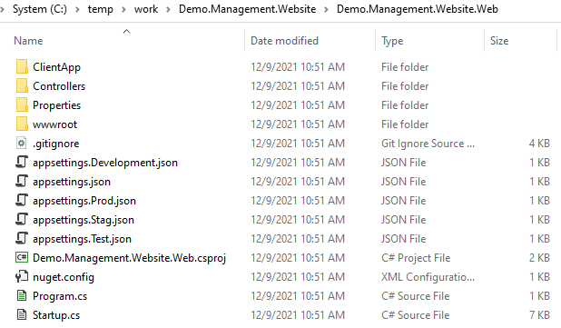

Introduction to Solution Web Project Templates
Project templates produce ready-to-run projects that make it easy for users to start with a working set of code. .NET includes a few project templates such as a console application or a class library. So we provide a project template to help you initialize web project.
We don't plan to introduce how to setup a project template via dotnet core cli. If you are interested, please refer Tutorial: Create a template package .
Introduce templates into dotnet CLI Tools
Overview
The DNV.SolutionPackage.ProjectTemplates helps developer to quickly initialize a work around web application project. We don't need to take more time on setting up. The developer can focus on business domain development tasks. This template contains authentication with Veracity. If the application need user management, it is also provided.
Install the template package
There are two methods to install SolutionPackage project templates. One is to install it directly from Nuget package source. Other is to install from local file.
dotnet new -i DNV.SolutionPackage.ProjectTemplates::1.0.0 --nuget-source "https://dnvgl-one.pkgs.visualstudio.com/_packaging/DNVGL.SolutionPackage/nuget/v3/index.json"
dotnet new -i C:\Temp\DNV.SolutionPackage.ProjectTemplates.1.0.0.nupkg
The following template packages will be installed:
C:\Temp\DNV.SolutionPackage.ProjectTemplates.1.0.0.nupkg
Success: DNV.SolutionPackage.ProjectTemplates::1.0.0 installed the following templates:
Template Name Short Name Language Tags
------------------------------- -------------- -------- ----
DNV.SolutionPacakge.WebTemplate DNVWebTemplate DNV
List the templates
dotnet new --list
After the template package installation, DNV.SolutionPackages.WebTemplate is in the templates list. You also can use dotnet new --list command to list the detail which templates have installed.
dotnet new -l
These templates matched your input:
Template Name Short Name Language Tags
-------------------------------------------- ------------------- ---------- -------------------------------------
ASP.NET Core Empty web [C#],F# Web/Empty
ASP.NET Core gRPC Service grpc [C#] Web/gRPC
ASP.NET Core Web API webapi [C#],F# Web/WebAPI
ASP.NET Core Web App webapp,razor [C#] Web/MVC/Razor Pages
ASP.NET Core Web App (Model-View-Controller) mvc [C#],F# Web/MVC
ASP.NET Core with Angular angular [C#] Web/MVC/SPA
ASP.NET Core with React.js react [C#] Web/MVC/SPA
ASP.NET Core with React.js and Redux reactredux [C#] Web/MVC/SPA
Blazor Server App blazorserver [C#] Web/Blazor
Blazor WebAssembly App blazorwasm [C#] Web/Blazor/WebAssembly/PWA
Class Library classlib [C#],F#,VB Common/Library
Console App console [C#],F#,VB Common/Console
DNV.SolutionPacakge.WebTemplate DNVWebTemplate DNV
dotnet gitignore file gitignore Config
...
There are some built-in template packages, also you see our DNV.SolutionPackage.WebTemplate in the list.
Uninstall the template package
The dotnet new --uninstall command can remove the template.
dotnet new --uninstall DNV.SolutionPackage.ProjectTemplates
dotnet new -u DNV.SolutionPackage.ProjectTemplates
Success: DNV.SolutionPackage.ProjectTemplates::1.0.0 was uninstalled.
Create project via Solution Package project templates
Let's take a look the functions of DNV.SolutionPackage.WebTemplate. The dotnet new DNVWebTemplate --help command list all the parameters.
dotnet new DNVWebTemplate --help
DNV.SolutionPacakge.WebTemplate
Author: Tim Tu
Options:
-t|--template The type of webtemplate to use
basic - basic
management - management
Default: basic
-s|--skipRestore If specified, skips the automatic restore of the project on create.
bool - Optional
Default: false
-sk|--skipDBSetup If specified, skips the DB creation process on create.
bool - Optional
Default: false
The -t|--template option chooses main functions will be installed in created project. The basic is default value, the created project will integrate authentication library DNVGL.OAuth.Web which also is from DNV.SolutionPackage. The management option not only has all basic functions, but also integrates user management
The -s|--skipRestore option restores the dependencies of the created project. The default value is false. Doesn't restore the dependencies after created project.
The -sk|--skipDBSetup option must works with -t|--template management option. It will create tables related with user management in local SQL Server database. If there is no SQL Server in your local machine, A folder Scripts will be created in solution folder. The Scripts folder contains db.bat and dbcreation.sql files. Use dbcreeation.sql to generate tables in specify database.
The dotnet new DNVWebTemplate command create project from DNV.SolutionPackage.WebTemplate template.
dotnet new DNVWebTemplate --template management --name Demo.Management.Website --output ManagementSolution
The template "DNV.SolutionPacakge.WebTemplate" was created successfully.
Processing post-creation actions...
No Primary Outputs to restore.
Template is configured to run the following action:
Actual command: Scripts/db.bat
Do you want to run this action [Y(yes)|N(no)]?
N
In the work folder, there are new solution and project files in folder ManagementSolution.

When the website is running, the first access user will be added as administrator. This function is implemented in AuthController.cs file. Please pay attention when you use in your business.
The front-end of website is SPA application. The source code is in ClientApp folder. Please refer https://webapptemplatedoc.z6.web.core.windows.net/articles/intro.html .